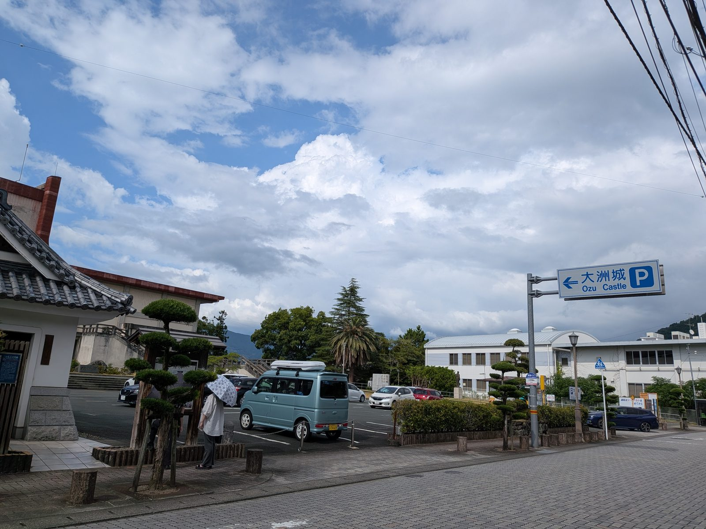

大洲の暮らし ・ 出典: 大洲市ホームページ、大洲市公式観光情報VisitOzu ・ 約1分で読める

大洲城下町エリアに車で行くとき、どこに停めればいいか毎回迷う人向けに、市の公式情報でも案内されている 無料駐車場をまとめておく。
①観光第一駐車場（大洲635-1）
②大洲まちの駅あさもや（大洲649-1）
③大洲市役所庁舎立体駐車場（大洲1034-2）
ちなみに大洲市民会館の駐車場は有料（最初の１時間160円、以降30分ごとに80円）なので、 無料で済ませたい場合は上の３か所を優先するのがおすすめだ。
観光シーズンの土日は①②が混みやすい。
ただ、③の庁舎立体駐車場が開くのは、まさにその土日祝日だけだ。
市役所が閉まっている日に、職員用の駐車場を開放する仕組みなので、①②が混む日と、③が使える日は、ちょうど重なっている。
それでも停められないときは、循環バス「ぐるりんおおず」で伊予大洲駅から向かう方法もある。
③は車両サイズの制限があるので、そこだけ気をつけたい。
この記事をサイトに掲載した日: 2026/08/08